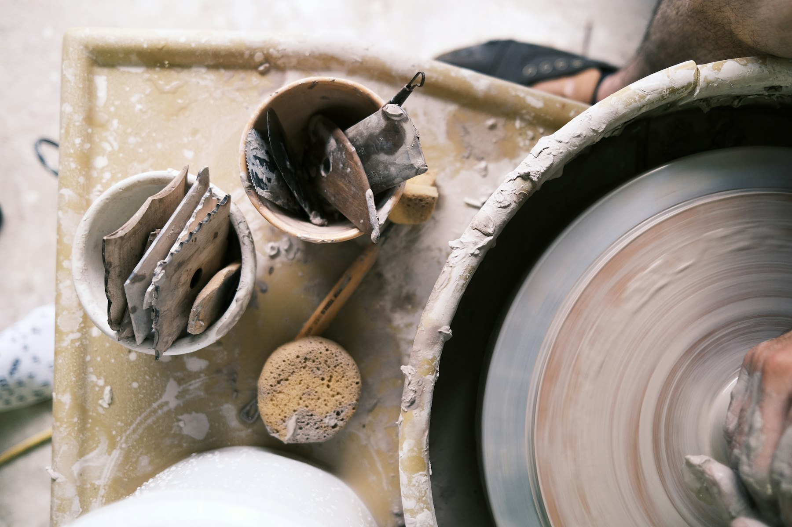
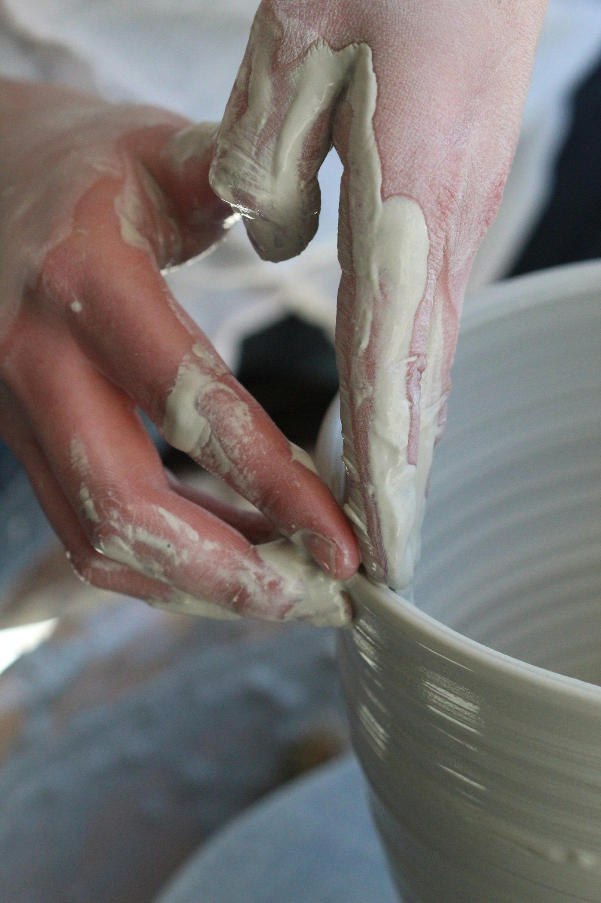
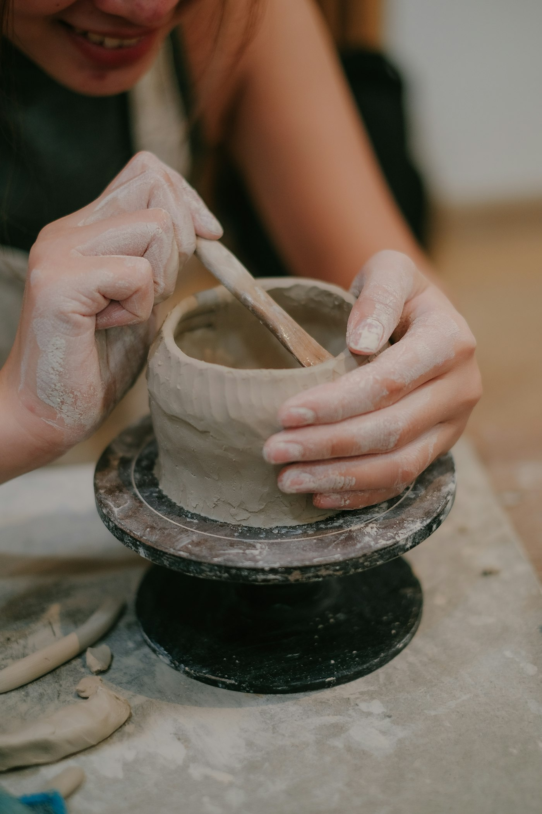
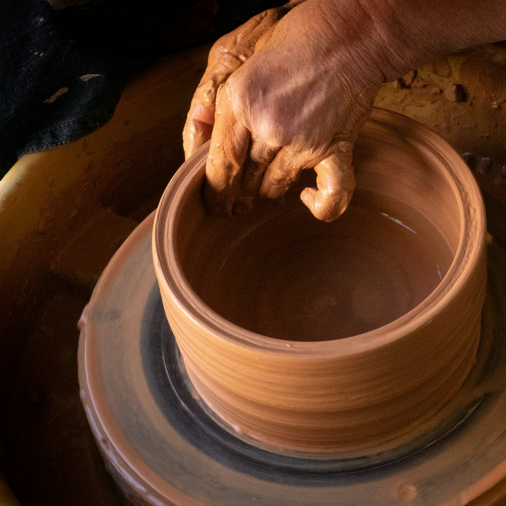
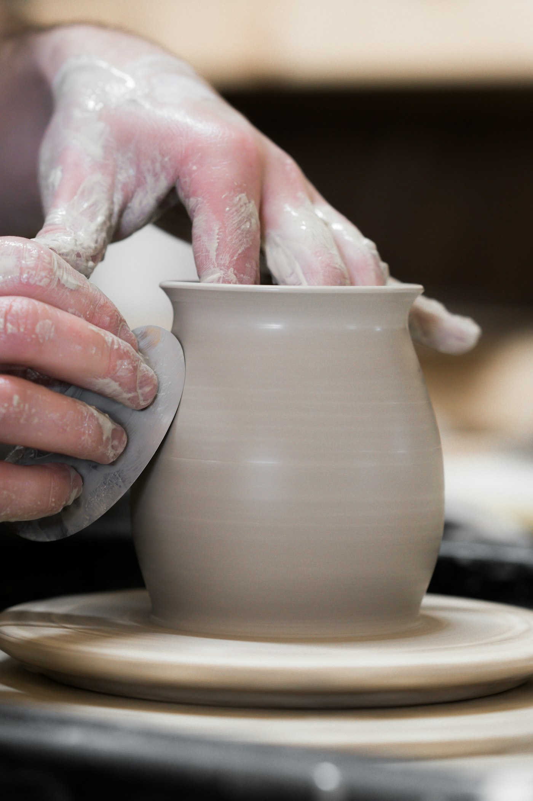

A friendly ceramics studio for first-timers, regulars and anyone who needs to get their hands dirty.


this is a 6-week bowl!
Answer two quick questions and we’ll point you to the right class. No experience required, no judgement either.



Five steps, a few days and one very patient kiln. You do the fun parts; we handle the firing.
Knead the clay to push out air bubbles. It’s a surprisingly good workout.
Centre it on the wheel, open it up and pull the walls. Wobbles are encouraged.
When it’s leather-hard, we turn it over and trim the foot for a clean finish.
Dip, pour or brush. Pick your colours and trust that the kiln will surprise you.
Two firings, two weeks. Then you collect something you actually made.
Every pot ends up in a glaze. Pick a favourite and the whole page will take on its colour.
Classes run Tuesday to Sunday at the studio. Aprons, tools and tea included. Bring clothes you don’t mind getting muddy.